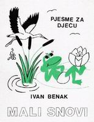
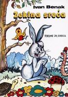
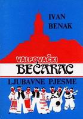
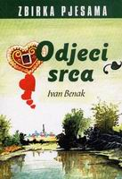
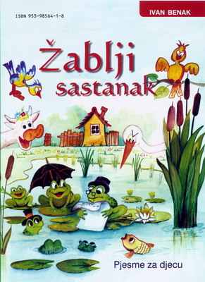
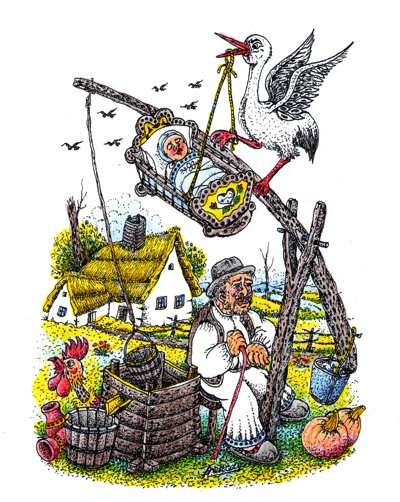

Objavljene knjige
Ivan Benak objavio je šest samostalnih zbirki pjesama, tri za djecu i tri za odrasle. Po njegovim riječima, od knjiga je otisnuto oko 6500 primjeraka, koji su „obišli cijeli svijet“. Pjesme su mu uvrštene u više od stotinu skupnih zbirki.
Published books
Ivan Benak published six collections of his own, three for children and three for adults. By his own count, some 6,500 copies of his books were printed, and they “travelled all over the world”. His poems were also included in more than a hundred anthologies.

Prva knjiga, objavljena kad mu je bilo pedeset i pet godina. „Osamdeset osmog ljeta, / dogodi se obrat novi, / te godine štampana je / dječja knjiga Mali snovi.“
His first book, published when he was fifty-five. “In the year of eighty-eight / came a turn, a new event: / LITTLE DREAMS, my children's book, / was that year to printing sent.”
Sadržaj knjige → (2 pjesme na stranici)
Contents of the book → (2 poems on this site)

Druga zbirka dječjih pjesama. Ponovljeno, ilustrirano izdanje uredio je Stjepan Najman, ilustrirali su je Jadranka Berak i Ivan Francuz, a recenzije su napisali Katarina Brkić i Dragutin Pasarić: „Zekina sreća zaslužuje da se nađe u svakoj dječjoj knjižnici i đačkoj torbi.“
His second collection for children. The reissued, illustrated edition was edited by Stjepan Najman and illustrated by Jadranka Berak and Ivan Francuz, with reviews by Katarina Brkić and Dragutin Pasarić: “Bunny's Luck deserves a place in every children's library and every school bag.”
Sadržaj knjige → (35 pjesama na stranici)
Contents of the book → (35 poems on this site)

Zbirka ljubavnih pjesama. Bećarac je stara slavonska pjesma u desetercu, šaljiva i ljubavna, koja se pjeva uz tamburicu.
A collection of love poems. The bećarac is an old Slavonian song form in ten-syllable couplets, teasing and amorous, sung to the tamburica.
Sadržaj knjige → (2 pjesme na stranici)
Contents of the book → (2 poems on this site)

Četvrta knjiga, zbirka pjesama raznih tema. „I četvrta knjiga kuca, / divni Odjek iz mog Srca…“
His fourth book, a collection of poems on many themes. “Then a fourth book came a-knocking, / lovely ECHOES OF THE HEART…”
Sadržaj knjige → (2 pjesme na stranici)
Contents of the book → (2 poems on this site)

Treća knjiga za djecu. „…zatim žabe doplivale / i Sastanak održale.“
His third book for children. “…then the frogs swam over, greeting, / and they held THE FROGS' MEETING.”
Sadržaj knjige → (43 pjesme na stranici)
Contents of the book → (43 poems on this site)

Šesta i posljednja knjiga, koju je promovirao pet dana prije svog sedamdeset i sedmog rođendana. Tematski je najbogatija: poglavlja su Ljubavne, Domoljubne, Humoristične, Protestne, Pjesme za djecu, Obiteljski kutak, Radio burza, Umirovljenički jadi te Zahvalnice i recenzije. Tiskanje je platio uz pomoć prijatelja i sponzora koje je sam obišao: „ovo prosjačenje nije za mene, već za buduću generaciju“.
His sixth and last book, launched five days before his seventy-seventh birthday. It is his richest in themes, with chapters of love poems, homeland poems, humorous and protest poems, poems for children, a family corner, the Radio burza ads, pensioners' woes, and thanks and reviews. He paid for the printing with the help of friends and sponsors he visited himself: “this begging is not for me, but for the generation to come.”
Sadržaj knjige → (159 pjesama na stranici)
Contents of the book → (159 poems on this site)
Skupne zbirke i ostalo
Anthologies and more
Kao suosnivač i dugogodišnji voditelj pjesničke sekcije Poeta HKUD-a „Valpovo 1905.“ sudjelovao je u zajedničkim zbirkama Poetska svitanja, 10 godina Poeta i Snovi stihom izvezeni (za 15. obljetnicu Poeta), kojoj je bio i urednik.
As a co-founder and long-time leader of Poeta, the poetry section of the Valpovo 1905 cultural society, he took part in the joint collections Poetic Dawns, Ten Years of Poeta and Dreams Embroidered in Verse (for Poeta's fifteenth anniversary), which he also edited.
Pjesme su mu objavljene u više od stotinu skupnih zbirki pjesničkih udruga diljem Slavonije, u časopisima, revijama i biltenima, a čitao ih je na Radio Valpovštini, Slavonskoj televiziji i TV Osijek. Recenzirao je petnaestak knjiga drugih pjesnika.
His poems appeared in more than a hundred anthologies of poetry societies across Slavonia, and in magazines, reviews and bulletins. He read them on Radio Valpovština, Slavonian Television and TV Osijek. He also reviewed some fifteen books by other poets.
U vlastitoj nakladi uvezao je i manje knjižice, poput Destinacija Slavonije (2013.) i zbirke od dvadeset i pet pjesama o rodnom Sopju.
He bound smaller booklets himself, among them Destinations of Slavonia (2013) and a collection of twenty-five poems about his native Sopje.